Information · Kingdom 1886
The King
Whoever wins the Castle wears the crown. This page walks through every part of the position, and what Kingdom 1886 expects of whoever holds it.
King and High King
A King is crowned by winning a castle battle at home. A High King is crowned by winning KvK, and rules over both kingdoms in the matchup: their skills, appointments and grants can reach the defeated kingdom as well as our own. A reign lasts two weeks.
The timing matters. A regular King's second week is KvK week. A High King has just won KvK, so their second week has no KvK in it.
Everything the King does starts from the throne screen: Appointment, King Skill and Grant along the bottom, and the declaration scroll in the middle.
King's Declaration
The declaration publishes a message to every governor in the kingdom, up to 150 characters. Tap the scroll on the throne screen to write one.
How we use it: celebrations, and reminders to save up and prepare for KvK.
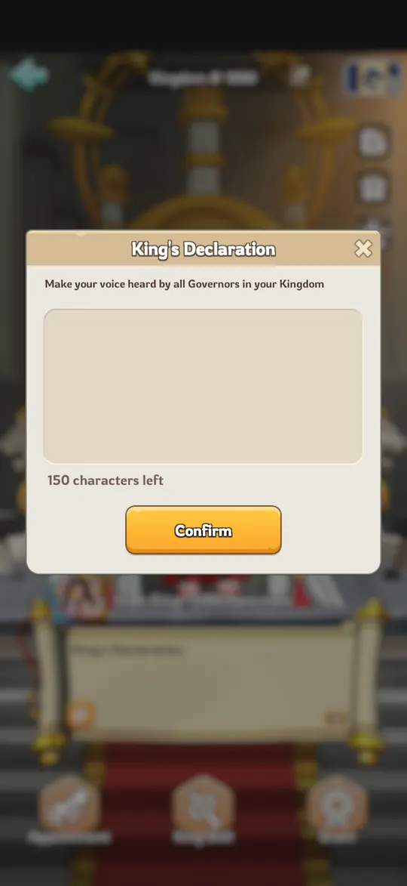
King Skills
King Skill opens the King's set of skills. Each one costs Authority or uses up one of a limited number of charges, and each has its own cooldown.
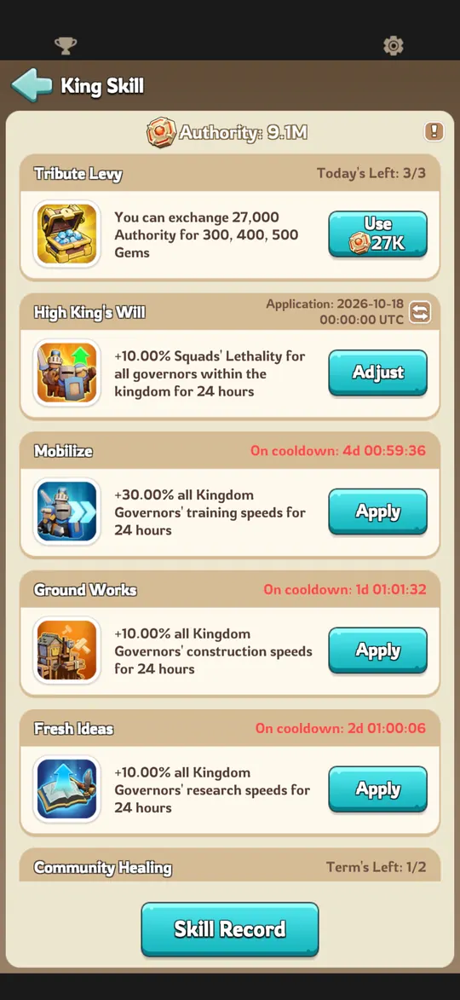
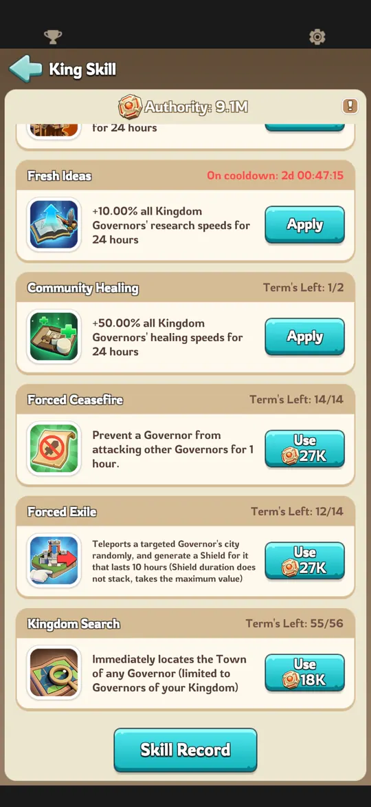
Kingdom-wide buffs
Ground Works, Fresh Ideas and Mobilize each give every governor a 10% or 30% speed boost for 24 hours. Every one of them can be used now or scheduled for a set date and time in UTC, and a scheduled skill can be adjusted until it starts. The range decides who gets it: only the victorious kingdom, or the defeated kingdom as well.
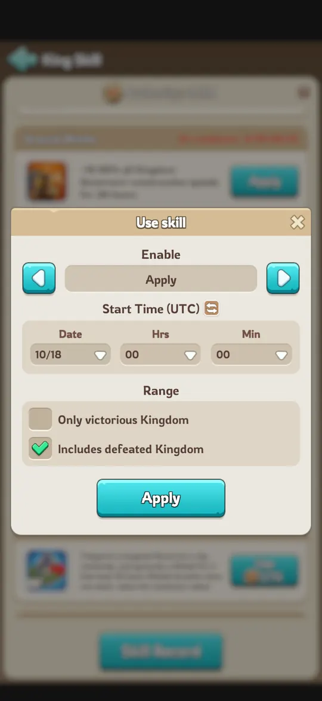
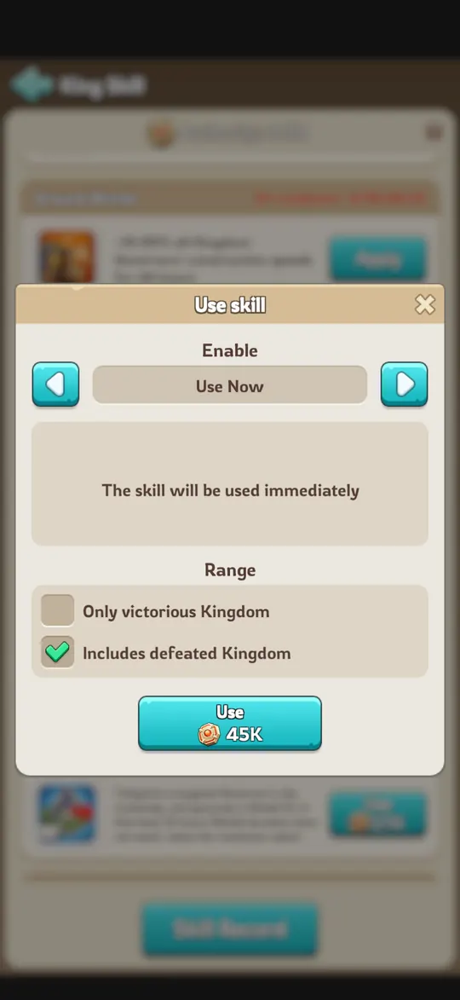
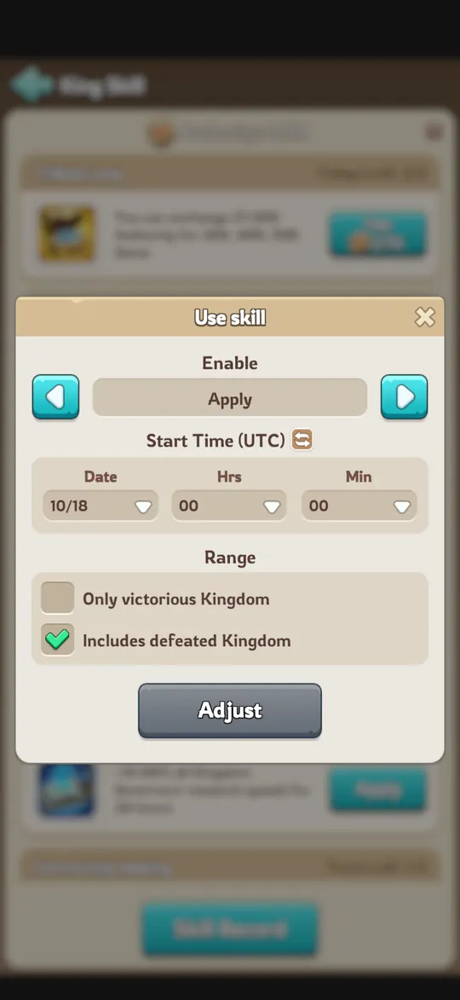
We save these for KvK. Each one goes on the KvK day it helps most:
| KvK day | Skill | What it does |
|---|---|---|
| Day 1 | Ground Works | +10% construction speed for 24 hours |
| Day 2 | Fresh Ideas | +10% research speed for 24 hours |
| Day 4 | Mobilize | +30% troop training speed for 24 hours |
Watch the cooldown. These buffs have 2 charges and a 7-day cooldown. A regular King's second week is KvK week, so if you use one in your first week, make sure it is off cooldown again in time for its KvK day. Using one less than seven days before that day means the kingdom goes into KvK without it.
Other skills
The other skills each have their own charges and cooldown, shown on the skill as Term's Left.
- Forced Exile teleports a governor's city to a random spot, with a shield. It has a 4-hour cooldown. We use it to move members who have quit or stopped responding.
- Forced Ceasefire stops one governor from attacking anyone for an hour.
- Kingdom Search finds the Town Center of any governor in the kingdom.
- Community Healing boosts every governor's healing speed for 24 hours.
- Tribute Levy exchanges Authority for gems.
Appointments
The King fills six kingdom-wide positions. Each gives its holder a buff for as long as they hold the slot. Governors apply for a slot, or the King appoints someone directly from their own alliance or anyone else in the kingdom.
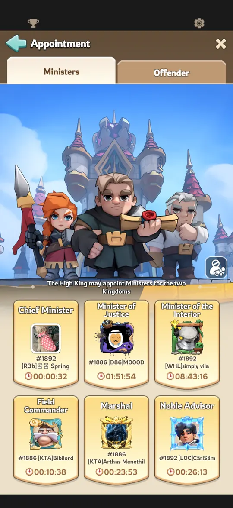
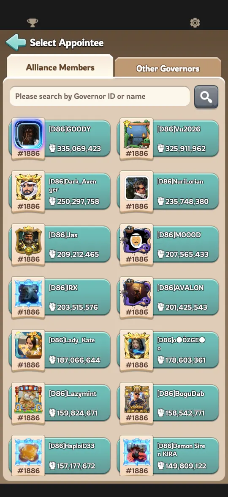
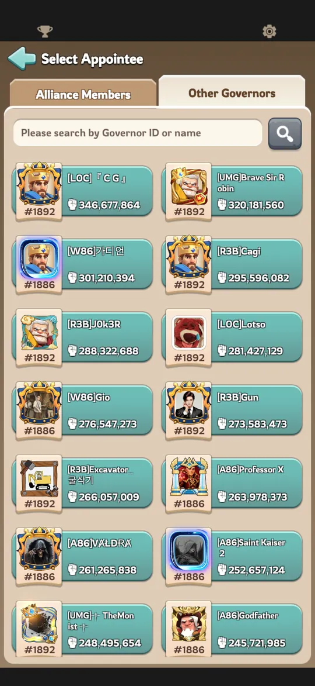
| Position | Buff to the holder |
|---|---|
| Chief Minister | Troop training, research and construction speed |
| Minister of Justice | Resources generated by Town Center buildings. Can also jail players and change who holds the other appointments. |
| Minister of the Interior | Healing speed and infirmary capacity |
| Field Commander | Squad lethality, for rally leaders |
| Marshal | Squad attack and deployment capacity |
| Noble Advisor | Training speed and training capacity |
Time slots
When you are first crowned, you choose how appointment slots are booked. Either a fixed grid, where governors can book any 30-minute slot up to a day ahead, or a queue, where each applicant simply goes next in line.
We always use the 30-minute grid. It lets members reserve the exact slot they want.
Blocklist and auto-approval
The King can block specific governors from applying for any position, and decides whether applications are approved automatically. Auto-approval can cover only the victorious kingdom or the defeated kingdom too, with a minimum Town Center level.
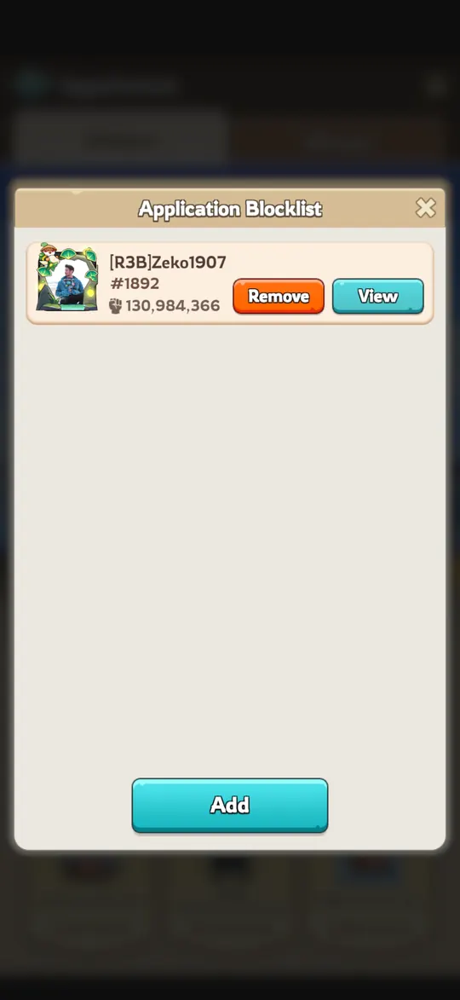
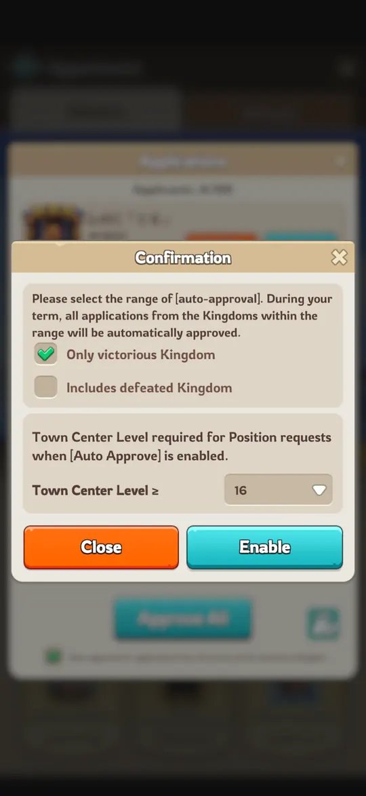
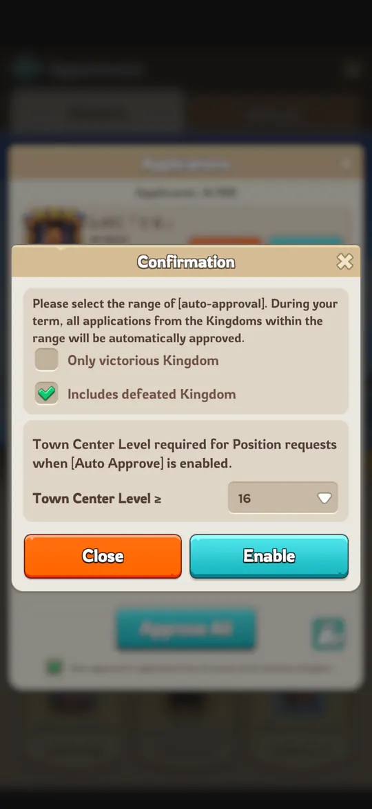
Our practice: as King or High King, turn on auto-approval for both kingdoms on every position except Minister of Justice. That one stays manual, because it can jail players and add or remove people from every other appointment.
Jails
The Offender tab on the appointment screen holds six jails, each giving its prisoner a debuff. We use the jails to enforce NAP rules. Three of them are the trials handed out as punishments, explained on the rules page.
| Jail | Debuff |
|---|---|
| Avarice Trial | Troop training, research and construction speed |
| Arrogance Trial | Resource production |
| Melancholy Trial | Healing speed and infirmary capacity |
| Timidity Trial | Squad lethality |
| Domination Trial | Squad attack and deployment capacity |
| Indolence Trial | Training speed |
The King's own perks
The King can give themselves the perks of any appointment at any time, from a button on the throne screen. Switching to a different perk has a 5-minute cooldown.
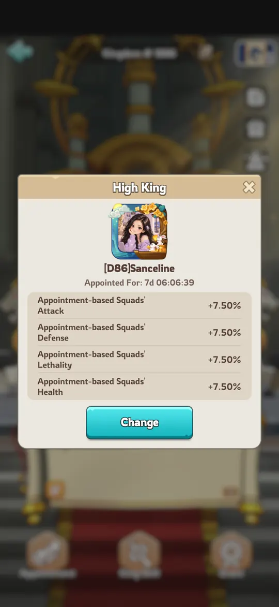
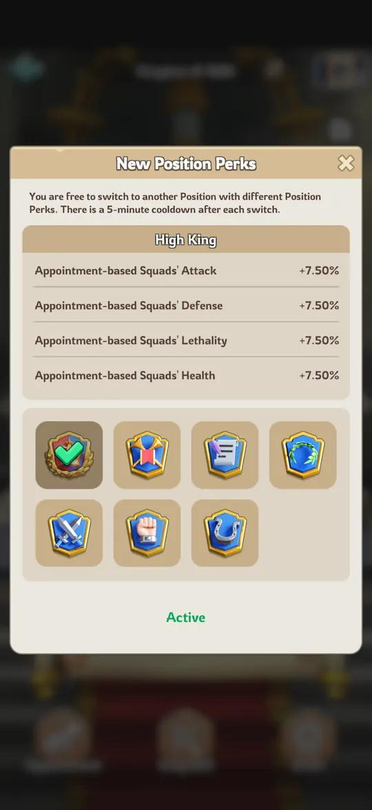
Grants
Grants are one-off rewards the King hands to governors who fought especially well: 2 General's Commendations, 10 Knight's Awards and 50 Soldier's Commendations. Who gets them is the King's choice. They can go within the King's alliance, across the whole kingdom, or, for a High King, to the enemy kingdom as well.
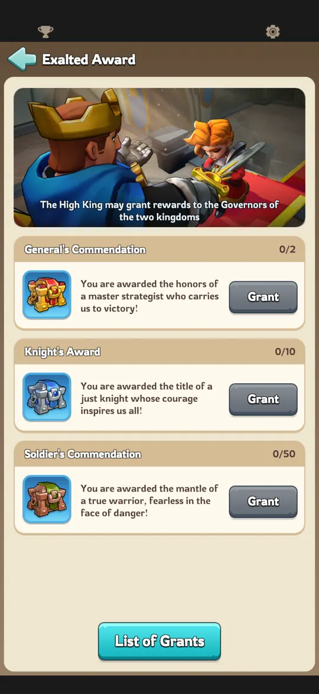
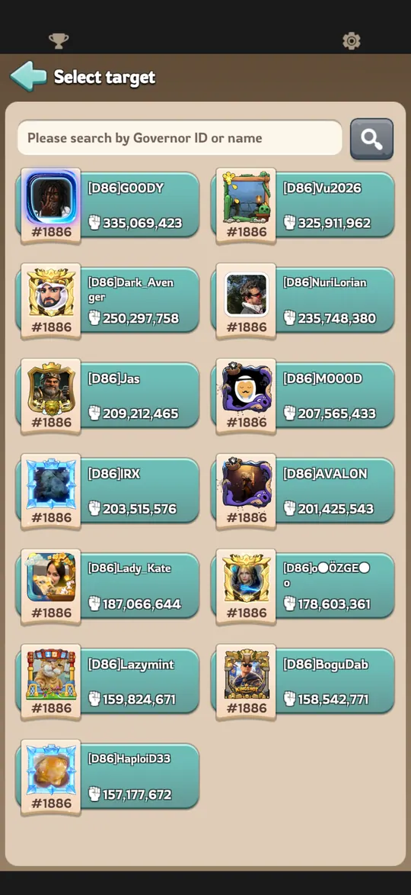
Skins and renaming
The King gets an exclusive Town Center skin and an exclusive march skin. Both last 14 days and only while the position is held. The King can also rename the kingdom.
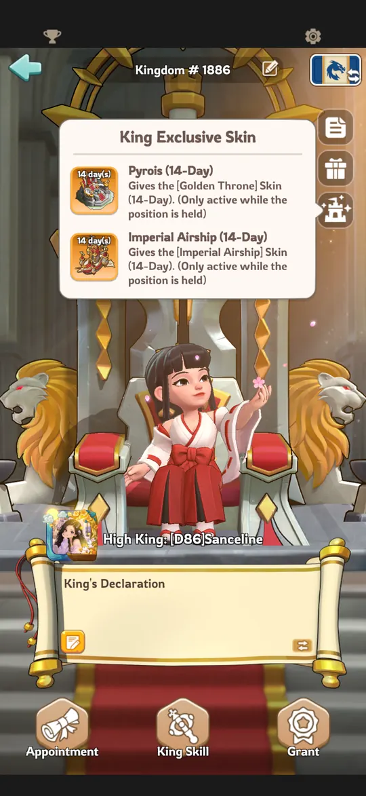
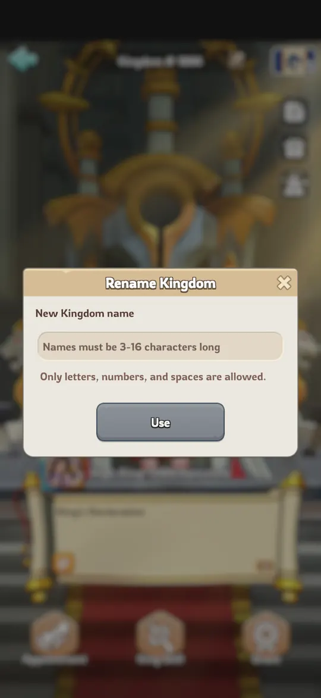
Standard practice in K1886
- Declaration: for celebrations and KvK prep reminders.
- Kingdom-wide buffs: Ground Works on KvK day 1, Fresh Ideas on day 2, Mobilize on day 4. Mind the 7-day cooldown if you use one in your first week.
- Forced Exile: for moving members who have quit or stopped responding.
- Appointments: the 30-minute grid, with auto-approval for both kingdoms on every position except Minister of Justice.
- Jails: only to enforce NAP rules.
- High King: we normally apply every kingdom-wide buff to both kingdoms. The exception is an enemy kingdom that broke our KvK agreement or has been openly hateful as a server.